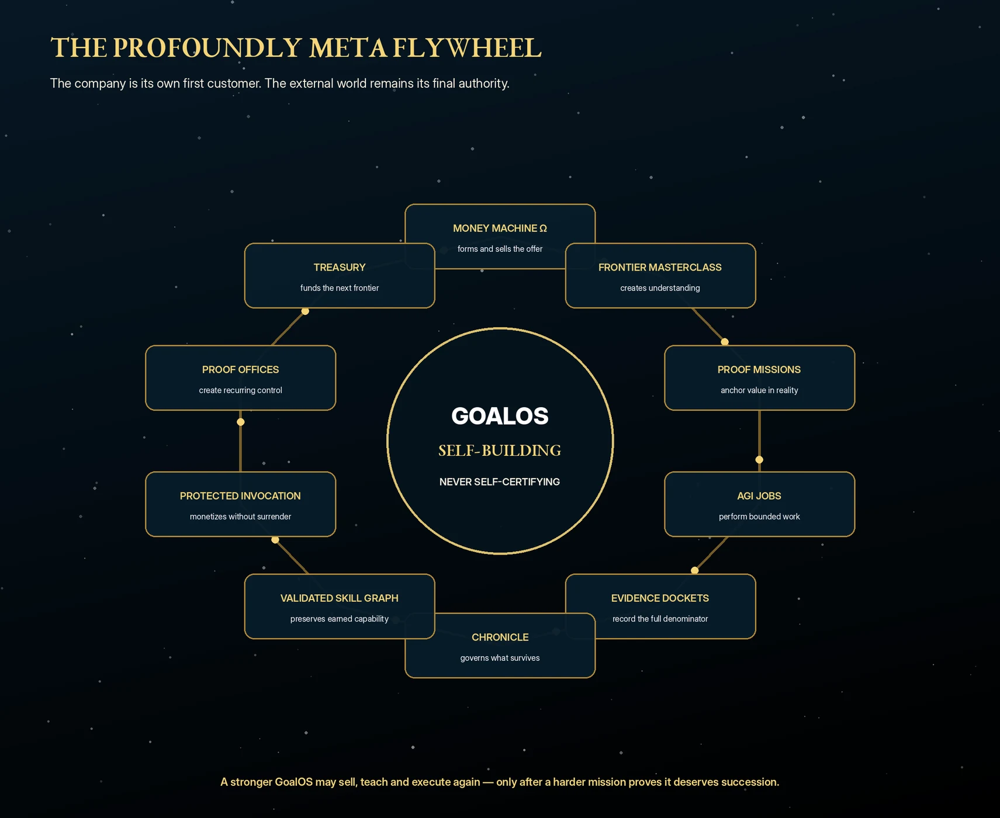
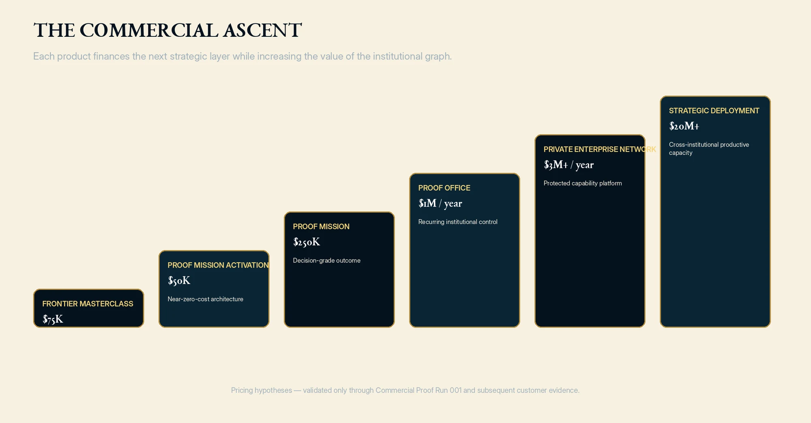
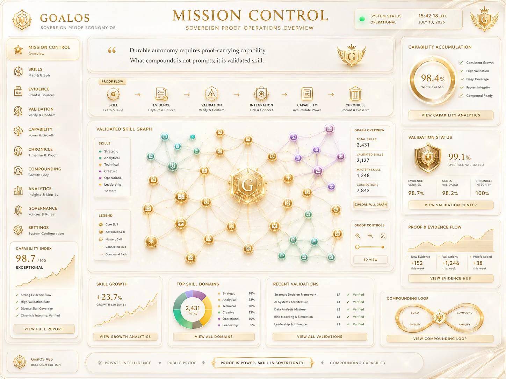

WHEN INTELLIGENCE BECOMES ABUNDANTAUTHORITY BECOMES THE RARE ASSET.
GoalOS converts intelligence into bounded work, work into proof, proof into authority, authority into private capability, and verified profit into an ever-greater capacity to accomplish consequential work.
Public site. Do not send confidential or private information. Sensitive missions begin only after verification, contract, and a protected channel.

One institution. One chain. Growing capacity.
The site presents the complete thesis while maintaining a strict boundary between architecture, scenario, and earned result.
GoalOS must become the system through which GoalOS is purchased.
Zero seller touch in the standard lane. Human sovereignty at the constitutional boundary. Fail closed when a transaction leaves the approved lane.
Attract
High-intent content, consented audience, referrals, and search.
Diagnose
Readiness scan, proof debt, value at stake, and risk class.
Transact
Fixed offer, approved clauses, signature, payment, and reserved capacity.
Prove
Bounded execution, evidence docket, acceptance, and recurrence justified by verified need.
GoalOS sells, works, proves, remembers selectively, and finances its next generation.



Claims rise only with receipts.
Standard autonomy. Sovereign institution.
The prices below are management hypotheses, not firm offers, forecasts, or return promises.
Autonomous standard lane
Sovereign institutional lane
The destination is not more content. It is more safe verified productive capacity.
Revenue, admitted capability, identity, rights, and treasury compose a trajectory toward compute, science, energy, industry, and harder missions—only if proof and free cash flow justify it.
Strict boundary. These measures are management standards. They are not achieved results.